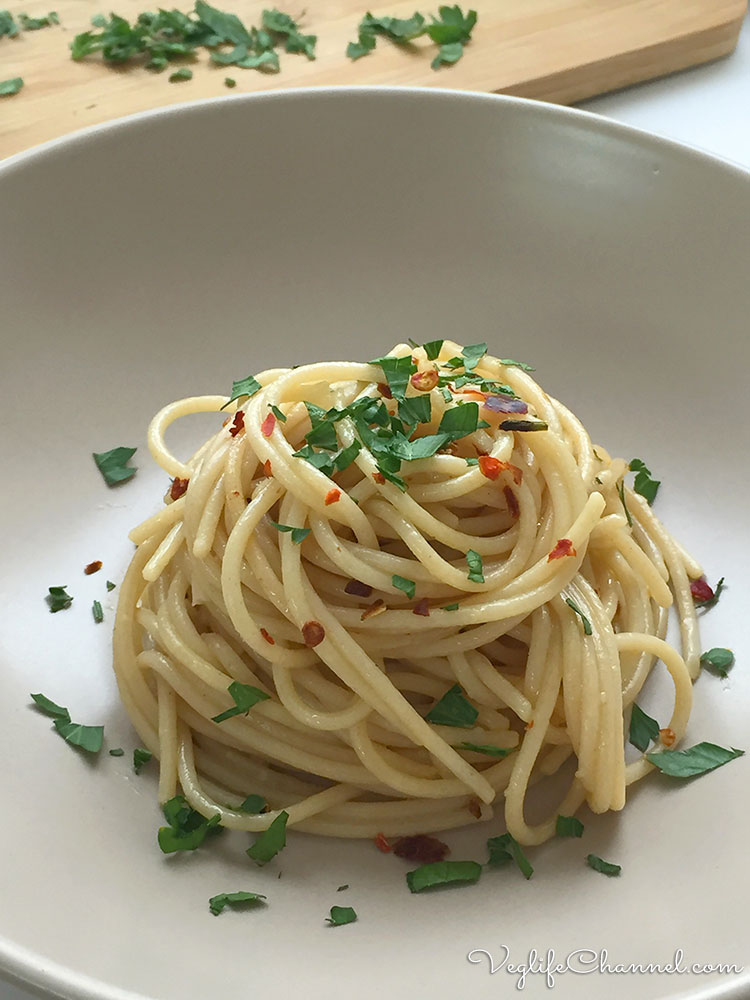

Spaghetti aglio, olio e peperoncino

Description
One morning, when Gregor Samsa woke from troubled dreams, he found himself transformed in his bed into a horrible vermin. He lay on his armour-like back, and if he lifted his head a little he could see his brown belly, slightly domed and divided by arches into stiff sections.
The bedding was hardly able to cover it and seemed ready to slide off any moment. His many legs, pitifully thin compared with the size of the rest of him, waved about helplessly as he looked. "What's happened to me? " he thought. It wasn't a dream. His room, a proper human
Ingredients
- Spaghetti
- Garlic
- Olive oil
- Chili
- Salt
- optional: Fresh parsley
Steps
- Put the water on medium/high heat. Proceed with the following steps while it is warming up
- Finely chop the garlic and the chili pepper
- If you are using fresh parsley, roughly chop it and set aside to garnish at the end
- Put the oil, the garlic, and the chili in a cooking pan on low heat. Avoid frying the ingredients, just warm them up to transfer their flavor to the oil
- When the water starts boiling, put salt and the spaghetti
- Considering the cooking time of the pasta, raise the heat of the cooking pan just enough to slightly fry the ingredients for two to three minutes. Pay attention that the garlic does not get brown from frying
- A couple of minutes before the pasta is done cooking, transfer it to the pan with four or five spoons of its water, raise the heat enough to keep it boiling, and finish cooking. Add more water (carefully) if needed
- Garnish with the chopped parsley before serving